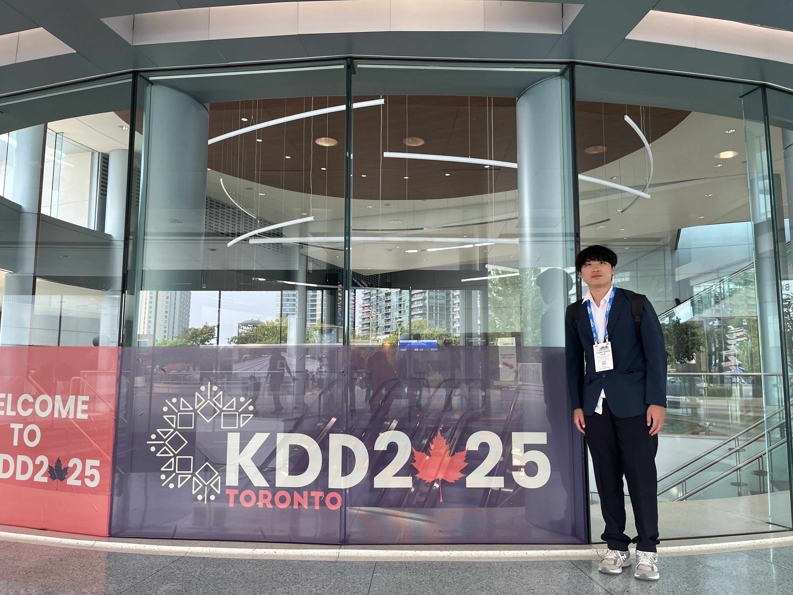
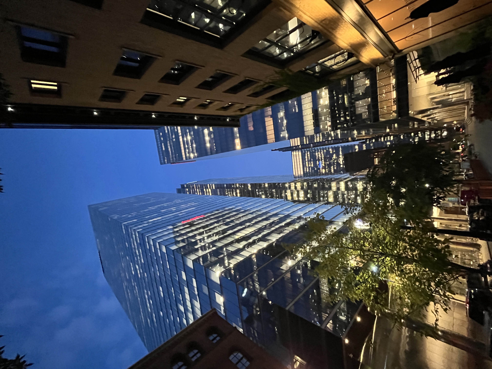

A Hybrid Framework for Financial Regulatory Compliance: Integrating LLMs and SMT Solvers for Automated Legal Analysis
📍 Toronto, Canada | 📍 Oral Presenter
📋 摘要 (Abstract)
本研究提出一個混合框架，結合大型語言模型(LLM)與滿足性模理論(SMT)求解器，用於金融監管領域的自動化法律分析。系統特別針對台灣法律環境設計，整合檢索增強生成(RAG)管道以存取法定參考、歷史執法案例和金融監督管理委員會(FSC)的企業違規記錄。利用 Python 工具(包括 Z3 和 OpenAI API)，框架支援案例相似度評估、監管約束檢查和基於約束的形式推理進行場景模擬。
代理通過為金融合規量身定制的思維鏈提示方法模擬法律專家分析，識別潛在違規、解釋適用法律條款，並生成與法定要求相符的糾正建議。通過區分硬約束(法律)和軟約束(案例特定事實)，系統實現最小法律修正和使用影響圓錐分析的迭代驗證。基於 Gradio 的互動界面允許用戶實時探索合規評估。
在 87 個 FSC 發布的罰款案例上的實驗評估顯示，提議的 LLM+SMT 混合系統在識別非法條款、生成準確糾正和提供可解釋推理輸出方面顯著優於純 LLM 基線——在約束滿足任務中實現超過 300 倍的加速和完美準確度。這項工作為金融治理中 AI 增強法律推理的未來應用奠定了基礎，為自動化合規診斷提供了透明、可定制和符合法規的工具。
💻 技術堆棧
Python
LLM (Large Language Models)
SMT Solver
Formal Method
Financial Compliance
AutoGen
Prompt Engineering
📚 發表與連結
📷 會議照片



